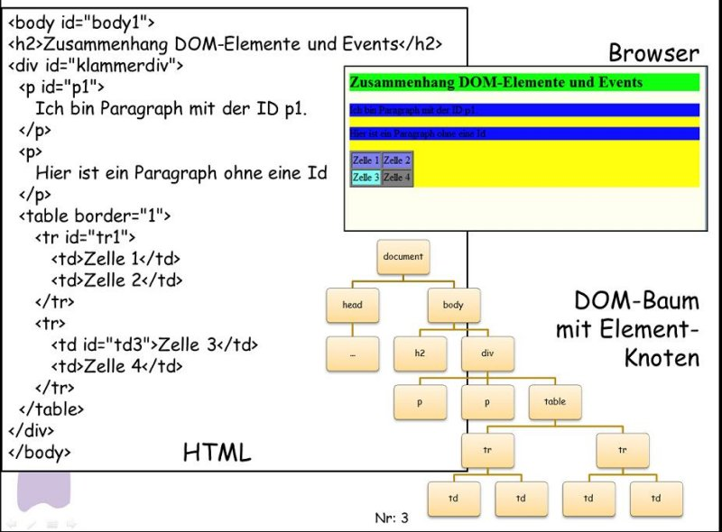

Welche unterschiedlichen Typen von DOM-Knoten gibt es?
Insgesamt gibt es 12 verschiedene Typen von DOM-Knoten: (HTML-)Element, Attribut, Text, Kommentar, ...
Die internen Zeiger firstChild und nextSibling verweisen jeweils auf einen beliebigen Knoten ohne Rücksicht auf den Typ des Knotens. So kann firstChild auf das nächste HTML-Element verweisen, aber auch auf einen Text-Knoten (z.B. einen Zeilenumbruch) oder einen HTML-Kommentarknoten. Für eine Abfrage auf die HMTL-Elemente müsste man immer den Typ des Knotens abfragen.
Im Gegensatz dazu verweisen die internen Zeiger firstElementChild und nextElementSibling nur auf HTML-Elemente (also Knoten HTML-Tag repräsentieren) und nicht mehr z.B. auf Kommentare.
Wie hängen HTML und der DOM-Baum zusammen?
Der DOM-Baum ist die interne Repräsentation der HTML-Seite im Browser. Der Browser wandelt zunächst den HTML-Kode in den DOM-Baum um, wobei jedes HTML-Element zu einem DOM-Knoten wird.
Bei jeder Veränderung des DOMs durchläuft der Renderer den DOM-Baum erneut und stellt die geänderten Inhalte neu im Browser-Fenster dar.
Wie greife ich aus JavaScript auf die DOM-Knoten zu?
Es gibt verschiedene Zugriffsmöglichkeiten:
document.getElementById() // liefert 0 oder 1 Element
document.getElementsByName() // liefert 0 oder 1 Element
document.getElementsByTagName() // liefert einen Array ggfs. vielen Elementen
document.getElementsByClassName()// liefert einen Array ggfs. vielen Elementen
Darüber hinaus kann man mit den internen Zeigern wie firstElementChild ... arbeiten.
Seit HTML5 gibt es auch ganz 2 neue Funktionen, die CSS-Selektoren als Parameter akzeptieren:
querySelector() und querySelectorAll()
akzeptieren einen CSS-Selektor als Parameter und geben die ausgewählten Elemente als DOM-Elemente zurück.
querySelector gibt das erste gefundene Element zurück, querySelectorAll gibt alle gefundenen Elemente zurück.
Weitere Infos?
Eine schöne Seite mit Erklärungen und Beispielen finden Sie unter DOM-Beispiele
Ende der FAQ
Die wichtigsten Knotentypen und die Werte des nodeType finden Sie in der folgenden Tabelle
| Typ | Wert |
| Element | 1 |
| Attribut | 2 |
| Text | 3 |
Knotentypen und deren Werte im DOM